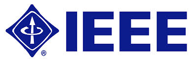

<html>
<head>
</head>
<body>
    <div id="fb-root"></div>
<script async defer crossorigin="anonymous" src="https://connect.facebook.net/en_US/sdk.js#xfbml=1&version=v10.0" nonce="1q5mXghg"></script>
</body>
</html>
<div id="fb-root"></div>
<meta charset="utf-8"><meta http-equiv="Content-Language" content="en-us" />
<title>SEED 2022 Home</title>
<base target="_top" />
<style type="text/css">p:{
        margin-top: 0;
        margin-bottom: 0;
      }
      a{
        text-decoration: none;
        color: #0000EE;
      }
      a:hover{
        text-decoration: underline;
      }
        .inner-wrapper{
            margin-left: 50%;
            width: 1150px;
        }
        .inner-wrapper img:nth-child(1){
            margin-left: -50%;
        } 
        .inner-wrapper img{
        margin-left: 5px;
      } 
      .announcements_wrapper{
        list-style: none;
        width: 100%;
        padding: 0;
        margin: 0;
      }
      .announcements_wrapper>li>p{
        padding-left: 10px;
        margin: 10px 0;
        color: black;
      }
      hr{
        margin-top: 10px;
        margin-bottom: 10px;
      }
      .table{
        border:1px solid #333;
        margin:20px 0;
        text-align: left;
        line-height: 1.6;
        border-collapse: collapse; 
      }
      .table tr{
        border:1px solid #333;
      }
      .table td{
        padding: 4px 12px;
      }
      .table td b{
        font-weight: 600;
      }


      .inner-wrapper{
            margin-left: 50%;
            width: 1150px;
        }
        .inner-wrapper img:nth-child(1){
            margin-left: -50%;
        } 
        .inner-wrapper img{
        margin-left: 5px;
      } 
      table{
        text-align: center;
      }
      .program-table {
          width: 90%;
          border-collapse: collapse;
          border: 1px solid #ccc;
          font-size: 14px;
      }
      .program-table tr{
        border-bottom: 1px solid #ccc;
      }
      .program-table tr td{
        border-left: 1px solid #ccc;
      }
      .program-table tr:nth-child(odd){
        background-color: #ebebeb;
      }
      .program-table tr:nth-child(even){
        background-color: #ffffff;
      }
      .program-table tr td, .program-table tr th{
        padding: 10px 10px;
      }
      .program-table tr a{
        color: black;
      }
      .sub-row{
        padding: 5px 0;
      }

      .session-content{
        text-align: justify;
      }
      .session-heading{
        text-align: justify;
        font-weight: bold !important;
        background-color: inherit;
        font-size: 14px;
      }
      .session-big-heading{
        text-align: justify;
        font-weight: bold !important;
        background-color: inherit;
        font-size: 17px;
      }
      .session-person {
        width: 100%;
        text-align: justify;
        background-color: inherit;
        font-size: 14px;
      }
      .session-abstract{
        margin-top: 5px;
        width: 100%;
        text-align: justify;
        background-color: inherit;
        font-size: 14px;
        color: #333;
      }
      .session-abstract:before{
        content:"Abstract: ";
        font-weight: bold;
        font-size: 14px;
      }
      .session-bio{
        margin-top: 5px;
        width: 100%;
        text-align: justify;
        background-color: inherit;
        font-size: 14px;
        color: #333;
      }
      .session-bio:before{
        content:"Bio: ";
        font-weight: bold;
        font-size: 14px;
      }
      .detail-link{
        text-decoration: none;
        color: #000;
      }
      .detail-link:hover{
        text-decoration: underline;
      }
      .session-chairs, .session-chair{
        text-align: left;
        margin-top: 5px;
        padding-left: 8.25em;
        text-indent: -7.75em;
      }
      .session-chairs::before{
        content: "Session Chairs: ";
        font-style: italic;
        font-size: 15px;
      }
      .session-chair::before{
        content: "Session Chair: ";
        font-style: italic;
        font-size: 15px;
      }
      .session-link{
        text-align: left;
        margin-top: 5px;

      }
      .program-table tr .session-link a{
        background: url(video_icon.png) no-repeat left;
        background-size: 20px 20px;
        padding-left: 24px;
        margin-right: 10px;
        color: #330099;
        text-decoration: none;
      }
      .program-table tr .session-link a:hover{
        text-decoration: underline;
      }
</style>
<script src="https://s3-us-west-2.amazonaws.com/ieeeshutpages/gdpr/settings.js"></script>
<link href="css/cookieconsent.min.css" rel="stylesheet" type="text/css" /><script src="js/cookieconsent.min.js"></script><script>window.addEventListener("load",
      function() {
        window.cookieconsent.initialise(json)
      });</script>

<p align="center"><b><font color="#808000" face="Arial" size="5">SEED 2022</font> </b></p>

<p align="center"><b><font color="#808080" face="Arial" size="4">September 26 - September 27, 2022</font> </b></p>

<p align="center" style="margin-top: 0; margin-bottom:0"><b><font color="#000080" face="Arial" size="4">&nbsp;Held Virtually</font> </b></p>

<!--
<div class="warpper" style="overflow:hidden; width: 100%; height: 150px; margin-top:30px">
<div class="inner-wrapper">  </div>
</div>
-->

<hr />
<o:p> <font face="Arial" size="3">The <b>IEEE International Symposium on Secure and Private Execution Environment Design (SEED)</b> is a forum which brings together researchers from the computer architecture and computer security communities into one venue that focuses on the design of architectural and system primitives which provide secure and private execution environments for applications, containers, or virtual machines.
    &nbsp;&nbsp;</font></o:p>
    <br>
    <br>
    <font face="Arial" size="3">
    SEED primarily focuses on research topics spanning across the boundaries of computer architecture,
    systems, and security. Papers are solicited on a range of topics, including (but not limited to):
    <li> Architecture, operating systems, and programming models and language for supporting secure and
    private execution</li>
    <li> Novel Designs for secure and private execution environments for GPUs, accelerators, and FPGAs</li>
    <li> Architectural support for new security primitives</li>
    <li> Novel cryptographic hardware designs for secure and private execution</li>
    <li> Models and analysis of performance-security trade-offs in the design of a secure execution
    environment</li>
    <li> Evaluation of security vulnerabilities in post-Moore’s Law technologies, e.g. persistent memory,
    quantum computing</li>
    <li> Demonstration and mitigation of architectural side channels, covert channels and other security
    vulnerabilities</li>
    <li> Metrics for measuring architecture-related security vulnerabilities</li>
    <li> Compiler and code generation techniques for mitigating architecture-induced side and covert channels
    and other vulnerabilities</li>
    </font>
<p>
<o:p>
    
<hr />

<!--<table class="table" style="float: right">
    <tbody>
        <tr>-->
            <td class="td-modal">
                <p style="line-height: 100%; margin-top: 0; margin-bottom: 0"><b><font color="#000080" face="Arial" size="4">Announcements: </font></b></p>
                <table class="table">
                    	<tbody>
                    	    
                            <p style="line-height: 100%; margin: 30px 0;"><b><font color="#008000" face="Arial" size="3">Selected papers will be considered for publication in a special issue of IEEE Micro.</font>
                                
                    	    <!--<p style="line-height: 100%; margin: 30px 0;"><b><font color="red" face="Arial" size="3">Video submissions deadline is Nov. 1st, 2021.</font> For details, see Video Submission instructions.-->
                    	    <!--
                    	    <p style="line-height: 100%; margin: 30px 0;"><b><font color="red" face="Arial" size="3">SEED 2022 hosted a <a target="body" href="#">virtual program</a></font> that included technical paper sessions and keynotes. To support effective dissemination of the publications, long recorded presentations for the 19 technical papers can be found at the following <a target="_blank" href="#">SEED YouTube Channel</a>.</b>
                    	    
                    	    <p style="line-height: 100%; margin: 30px 0;"><b><font color="red" face="Arial" size="3">Keynote speakers:</font> 
                    	    <br clear="all" />
                    	     Keynote 1: Achieving the Promise of Confidential Computing -- Ron Perez (Intel)
                    	    <br clear="all" />
                    	     Keynote 2: Scaling AI Sustainably: Environmental Implications, Challenges and Opportunities -- Carole-Jean Wu (Facebook AI Research)
                    	    <br clear="all" />
                    	    
                    	    <tr></tr>
                    	    </b>
                    	    <p style="line-height: 100%; margin: 30px 0;"><b><font color="red" face="Arial" size="3">Register for the conference using URL, <a target="_blank" href="https://cvent.me/vw32Ex">https://cvent.me/vw32Ex</a></font> All registered participants receive an email from registration chair, Bingzhe Li <<a href="mailto:bingzhe.li@okstate.edu">bingzhe.li@okstate.edu</a>> with the links to access conference proceedings and the Zoom information to join the conference sessions.
                    	    -->
                    	    

                    	    <p style="line-height: 100%; margin: 10px 0;">The important dates are given below:</p>
                                    <tr>
                                        <td>Abstract deadline</td>            <td><b>June 3, 2022</b></td>
                                    </tr>
                                    <tr>
                    	    		    <td>Submission Deadline</td>
                    	    			<td><b>June 10, 2022 11:59pm AOE<b style="color:#FF3B30;">&nbsp;(EXTENDED DEADLINE)</b></b></td>
                    	    		</tr>
                    	    		<tr>
                    	    		    <td>Decision Notification</td>			<td><b>July 29, 2022</b></td>
                    	    		</tr>
                    	    		<tr>
                    	    		    <td>Camera-ready deadline</td>			<td><b>September 2, 2022</b></td>
                    	    		</tr>
                    	</tbody>
                    	
                </table>
            </td>
            
            <p class="MsoNormal" style="MARGIN-BOTTOM: 12pt">
              <font face="Arial">
                <o:p>
                  <b style="text-decoration: underline;">Proceeding Guidelines:</b>
                  <ul>
                      <li>Each accepted paper must be accompanied by a unique full registration in order to be included in the program.</li>
                      <li>Each accepted paper must be presented by one of the authors at the conference in order to be included in the published proceedings.</li>
                      </ul>
                  </o:p>
              </font>
            </p>
            
            <!--
            <td colspan=2>
                <!--<p style="line-height: 100%; margin-top: 0; margin-bottom: 0"><b><font color="#000080" face="Arial" size="4">Tweets by SEED 2022: </font></b></p>-->
            <!--
                <a class="twitter-timeline" data-width="350" data-height="350" href="https://twitter.com/ieeeSeedSymp&ref_src=twsrc%5Etfw"></a> <script async src="https://platform.twitter.com/widgets.js" charset="utf-8"></script>
            </td>
            -->
            <td colspan=3>
                
<!--                <div class="fb-page" data-href="https://www.facebook.com/#" data-tabs="timeline" data-width="300" data-height="500" data-small-header="true" data-adapt-container-width="true" data-hide-cover="false" data-show-facepile="true"><blockquote cite="https://www.facebook.com/#" class="fb-xfbml-parse-ignore"><a href="https://www.facebook.com/#">IEEE International Symposium on Secure and Private Execution Environment Design</a></blockquote></div>-->

            </td>
<!--        </tr>
    </tbody>
</table>-->


<!--<p style="line-height: 100%; margin-top: 0; margin-bottom: 0"><b><font color="#000080" face="Arial" size="4">Submissions: </font></b></p>
<br />-->

<!-- <p style="line-height: 100%;  margin-top: 0; margin-bottom: 10px">The <a href="#">submissions site</a> is now open and accepting abstracts and papers. More information about submissions can be found <a href="submission_initial.html" target="body">here</a>.</p>
-->

<!--<p style="line-height: 100%; margin: 10px 0;">The important dates are given below:</p>-->

<!--
<table class="table">
	<tbody>
		<tr>
			<td>Submission Deadline</td>
			<td><b>July 9, 2021</b></td>
		</tr>
		<tr>
			<td>Decision Notification</td>
			<td><b>September 3, 2021</b></td>
		</tr>
		<tr>
			<td>Camera-ready deadline</td>
			<td><b>October 8, 2021</b></td>
		</tr>
	</tbody>
</table>
-->


<!--
<p style="line-height: 100%; margin-top: 0; margin-bottom: 0"><b><font color="#000080" face="Arial" size="4">Industry Sponsors:</font></b></p>

<p style="line-height: 100%; margin-top: 0; margin-bottom: 0"></p>
<o:p> <o:p> <o:p> <o:p>
<hr />
<p style="line-height: 100%; margin-top: 0; margin-bottom: 0"><font face="Helvetica, Arial, sans-serif" size="3">&nbsp;&nbsp;&nbsp;For further information, please contact the General or Program Chairs (<a href="https://liulei-sys-inventor.github.io/" style="color: black;" target="_blank"><span style="font-family:Georgia, 'Times New Roman', Times, serif;font-weight: 500;">Lei Liu</span></a>, Email: liulei2010-AT-ict.ac.cn).</font></p>
-->

<!--
<p style="line-height: 100%; margin-top: 0; margin-bottom: 0"></p>

<p style="line-height: 100%; margin: 10px 0;">For further information please contact the general chairs:</p>

<p align="left" class="MsoNormal" style="margin-top: 0; margin-bottom: 0"><font face="Arial" size="3"><b>&nbsp;&nbsp;&nbsp;General Chairs:</b> </font></p>

<p align="left" class="MsoNormal" style="margin-top: 0; margin-bottom: 0"><font face="Arial" size="3">&nbsp;&nbsp;&nbsp;&nbsp;&nbsp;&nbsp;&nbsp;&nbsp; </font> <font size="3"> <o:p> <font face="Helvetica, Arial, sans-serif" style="line-height: 22px;">Omer Khan, <i>University of Connecticut</i></font> </o:p> <o:p> <font face="Helvetica, Arial, sans-serif">&nbsp;&nbsp; </font> </o:p> </font></p>

<p align="left" class="MsoNormal" style="margin-top: 0; margin-bottom: 0"><font face="Arial" size="3">&nbsp;&nbsp;&nbsp;&nbsp;&nbsp;&nbsp;&nbsp;&nbsp; </font> <font size="3"> <o:p> <font face="Helvetica, Arial, sans-serif" style="line-height: 22px;">Ravi Soundararajan, <i>VMware</i></font> </o:p> <o:p> <font face="Helvetica, Arial, sans-serif">&nbsp;&nbsp; </font> </o:p> </font></p>

<p align="left" class="MsoNormal" style="margin-top: 0; margin-bottom: 0"><font face="Arial" size="3">&nbsp;&nbsp; <o:p></o:p></font></p>

<p align="left" class="MsoNormal" style="margin-top: 0; margin-bottom: 0"><font face="Arial" size="3"><b>&nbsp;&nbsp;&nbsp;Program Chairs:</b> </font></p>

<p align="left" class="MsoNormal" style="margin-top: 0; margin-bottom: 0"><font face="Arial" size="3">&nbsp;&nbsp;&nbsp;&nbsp;&nbsp;&nbsp;&nbsp;&nbsp; </font> <font size="3"> <o:p> <font face="Helvetica, Arial, sans-serif" style="line-height: 22px;"> Huiyang Zhou, <i>NC State University</i></font> </o:p> <o:p> <font face="Helvetica, Arial, sans-serif">&nbsp;&nbsp; </font> </o:p> </font></p>

<p align="left" class="MsoNormal" style="margin-top: 0; margin-bottom: 0"><font face="Arial" size="3">&nbsp;&nbsp;&nbsp;&nbsp;&nbsp;&nbsp;&nbsp;&nbsp; </font> <font size="3"> <o:p> <font face="Helvetica, Arial, sans-serif" style="line-height: 22px;"> Tim Rogers, <i>Purdue University</i></font> </o:p> <o:p> <font face="Helvetica, Arial, sans-serif">&nbsp;&nbsp; </font> </o:p> </font></p>
-->


<p align="center"><span class="style9"><font size="4">Sponsored by:</font></span></p> <p align="center"> <a href="http://www.ieee.org/index.html" target="_top"></a>&nbsp; &nbsp; <a href="http://www.computer.org/portal/web/guest/home" target="_top"></a>&nbsp; &nbsp;<a target="_blank" href="https://research.fb.com/"></a>&nbsp; &nbsp;&nbsp;</p>
<!--<a target="_blank" href="http://www.vmware.com/"></a>&nbsp; &nbsp;&nbsp; &nbsp;<a target="_blank" href="https://research.fb.com/"></a> </p> <br />
-->


<p></p>

<hr>
<p align="left" style="MARGIN-TOP: 0px; MARGIN-BOTTOM: 0px"><font color="#808080" face="Helvetica, Arial, sans-serif" size="2">This website is enabled by the <a target="_blank" href="https://www.uconn.edu">University of Connecticut</a>. It is maintained by the SEED 2022 Committee and follows <a href="https://www.ieee.org/security-privacy.html">IEEE Privacy Policy</a>.</font></p>

<p align="left" style="MARGIN-TOP: 0px; MARGIN-BOTTOM: 0px"><!-- <font face="Helvetica, Arial, sans-serif" size="2">
                        <font color="#808080">Please contact</font>
                        <a href="mailto:chjung@vt.edu">Changhee Jung</a>
                        <font color="#808080">if you have any questions.</font></font> --></p>
</o:p> </o:p> </o:p> </o:p> </o:p> </o:p> </o:p></p>

<p></p>
